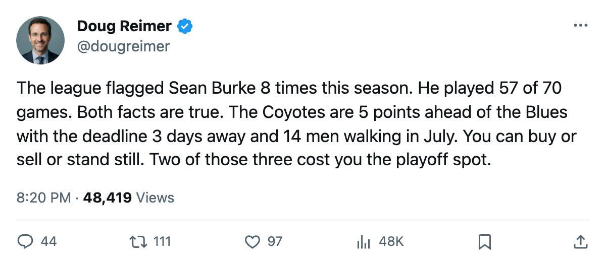
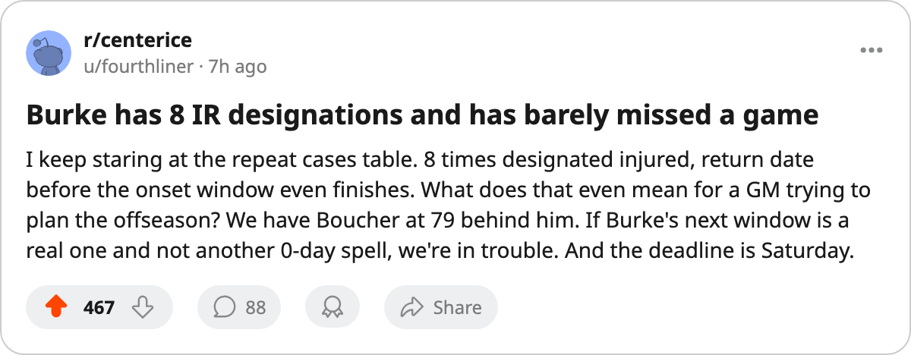

8 Designations, 14 Contracts, 5 Points: Phoenix Holds the Final Spot on Everything That Can Leave
Sean Burke carries the league's most injury designations. His club leads the West's last playoff place by 5 with 14 expiring contracts and 3 days before the trade deadline.
 Doug ReimerAnalytics editor, ex-video coach · The Slot Report
Doug ReimerAnalytics editor, ex-video coach · The Slot Report
 Sean Burke84 has been designated injured 8 times this season. No other player in the league carries more.
Sean Burke84 has been designated injured 8 times this season. No other player in the league carries more.  Joe Thornton83 and
Joe Thornton83 and  Andrew Raycroft75 have 7 each. Burke's most recent window opened sometime between March 14 and March 16, with a return date of March 15. None of his 8 spells carries a named body part.
Andrew Raycroft75 have 7 each. Burke's most recent window opened sometime between March 14 and March 16, with a return date of March 15. None of his 8 spells carries a named body part.
He has played 57 of  Phoenix Coyotes's 70 games anyway, an 81% workload that ranks 5th-highest among the league's starters. The designation count and the games played point in opposite directions, and that mismatch is what the whole piece rests on.
Phoenix Coyotes's 70 games anyway, an 81% workload that ranks 5th-highest among the league's starters. The designation count and the games played point in opposite directions, and that mismatch is what the whole piece rests on.
The Coyotes' backup is Brian Boucher79, graded 79 overall, 12 games played, 17% of the team's workload. Zac Bierk77 is 77 and has started 6. If Burke's next window keeps him out more than a night, the next man in is graded 5 fewer points than the man he replaces. The Coyotes have no quality depth at the position where a 1-night absence costs 2 standings points.
The Expiring Roster
Phoenix Coyotes carries 14 men with one year remaining on their contracts. The 3 highest-graded among them:
| Player | Pos | Overall | Salary | GP | Points | Morale |
|---|---|---|---|---|---|---|
| Sean Burke | G | 84 | $4.20M | 57 | — | 87 |
 Mike Sillinger84 Mike Sillinger84 | C | 84 | $1.80M | 50 | 55 | 97 |
 Shane Doan82 Shane Doan82 | RW | 82 | $2.40M | 70 | 54 | 94 |
Sillinger's 55 points in 50 games and Doan's 54 in 70 sit below the top-30 scoring cutoff of 91. But both are the club's highest-paid forwards by a wide margin, and both walk in July without compensation.
5 Points and the Math Behind Them
Phoenix Coyotes holds the West's 8th and final playoff place with 74 points in 70 games.  St. Louis Blues is 9th at 69 in 69, with 13 games left and a maximum of 95. Phoenix's ceiling is 98. The gap is 5 points. STL has one game in hand.
St. Louis Blues is 9th at 69 in 69, with 13 games left and a maximum of 95. Phoenix's ceiling is 98. The gap is 5 points. STL has one game in hand.
The Coyotes have 12 games remaining. The Blues have 13. If STL runs the table, it reaches 95. Phoenix needs 22 points in its final 12 games to stay ahead. That is 2 wins and 20 single points from the stretch, against a season that has produced 74 from 70.
The Deadline Question
The trade deadline is 3 days away, on 2005-03-19. Phoenix Coyotes returned $11.56M in profit this season on a $47.81M payroll. The per-point cost is $0.65M. The club has money to spend at the deadline.
But spending means adding to a roster where the top scorer (Sillinger) and the top right wing (Doan) and the starting goaltender (Burke) all walk at season's end. Any rental acquired now plays alongside men the team will not have in October.
The alternative is selling. That costs points from a club with a 5-point cushion and one fewer game in hand than the chaser. The Blues sit 69 points deep with a 1-game lead in games remaining. Every point sold from Phoenix's lineup closes that gap.
Phoenix Coyotes ranks 8th in the West on 74 points and 12th in per-point cost at $0.65M. The club's problem going into the deadline is that it can neither buy nor sell without paying a price that the standings haven't yet assessed. The 5-point cushion looks safe tonight, and the 14 contracts expire in 4 months.
Backup Notes
The Coyotes carry 48 injury spells across 280 days lost this season, 5th-most in the league. Burke alone accounts for 8 of those 48 designations. His pattern matches the profile the league's repeat-case designation was built to catch: a player flagged in and out repeatedly, never long enough to sit a week and never healthy enough to trust. The next spell could hold or could not. The club that needs him for 12 more games cannot find out which.

